Realise par :
Yasser Nabouzi
Omar Lahbabi
Yasser Nabouzi
Omar Lahbabi
2021-2022

Filliere :
IID1
Encadre par :
Noreddine GHERABI
Rapport Des TPs Java
TP9
Exo 1 :
package Exo1; import java.io.BufferedWriter; import java.io.FileNotFoundException; import java.io.FileOutputStream; import java.io.FileWriter; import java.io.IOException; import java.util.Scanner; public class Exo1 { public static void main(String[] args) { Scanner scan = new Scanner(System.in); String s = "",NomFichier = ""; System.out.println("Donner un nom pour le fichier :"); NomFichier = scan.nextLine(); try { FileWriter out = new FileWriter("Fichier/exo1/"+NomFichier+".txt"); BufferedWriter BufferW = new BufferedWriter(out); do { System.out.println("Taper une ligne (\"Stop\" pour annuler):"); s = scan.nextLine(); if (!s.equalsIgnoreCase("stop")) { BufferW.write(s); BufferW.newLine(); } } while(!s.equalsIgnoreCase("stop")); BufferW.close(); System.out.println("Fichier enregistrer dans le repertoire : Fichier/exo1/"); } catch (FileNotFoundException e) { // TODO Auto-generated catch block e.printStackTrace(); } catch (IOException e) { // TODO Auto-generated catch block e.printStackTrace(); } } }
Input / Ouput :
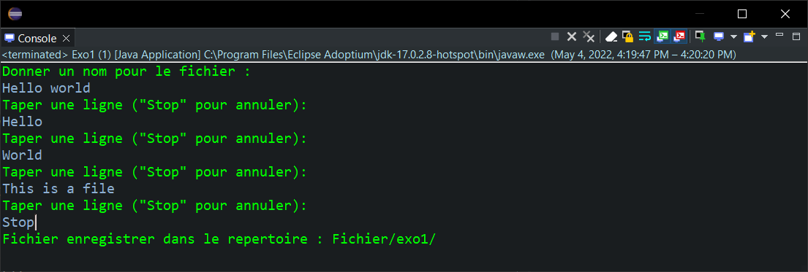
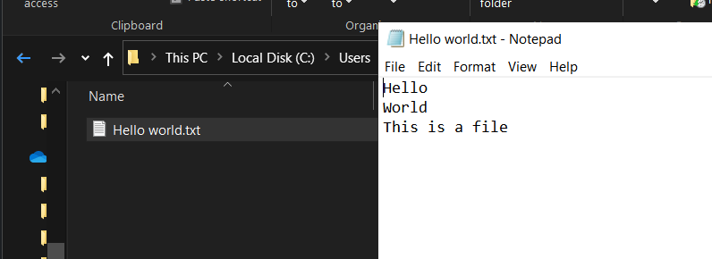
Exo 2:
package Exo2; import java.io.BufferedReader; import java.io.BufferedWriter; import java.io.FileNotFoundException; import java.io.FileReader; import java.io.FileWriter; import java.io.IOException; public class CopieFile { public static void main(String[] args) { String s,tmp = ""; int c = 0; int i = 0; try { FileReader input = new FileReader("Fichier/exo1/Hello World.txt"); BufferedReader BufferR = new BufferedReader(input); FileWriter out = new FileWriter("Fichier/exo2/destination.txt"); BufferedWriter BufferW = new BufferedWriter(out); //1er methode par Character while((c = BufferR.read()) != -1) { char Character = (char) c; tmp += Character; BufferW.write(Character); if(Character == '\n') { System.out.println("Writing in file : "+tmp+" line : "+i); tmp = ""; i++; } } //2eme methode // while(BufferR.ready()) { // s = BufferR.readLine(); // BufferW.write(s+"\n"); // System.out.println("Writing in file /destination.txt : line["+i+"] = "+s); // i++; // } BufferW.close(); BufferR.close(); } catch (FileNotFoundException e) { // TODO Auto-generated catch block e.printStackTrace(); } catch (IOException e) { // TODO Auto-generated catch block e.printStackTrace(); } } }
Pronons le fichier d'exercice 1 comme source.
- 1er Methods
Input / Ouput :
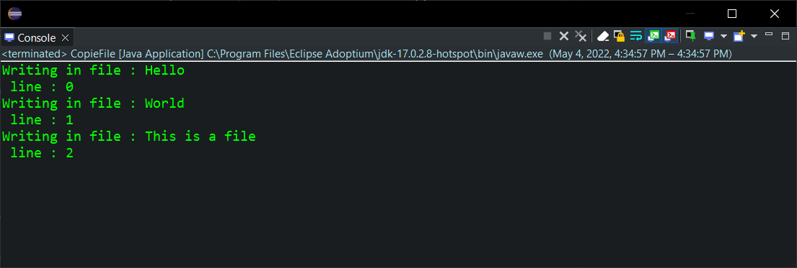
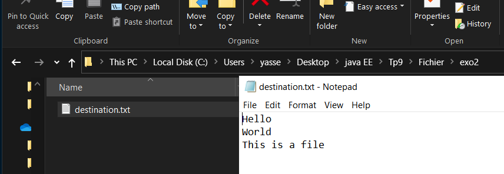
- 2eme method
Input / Ouput :
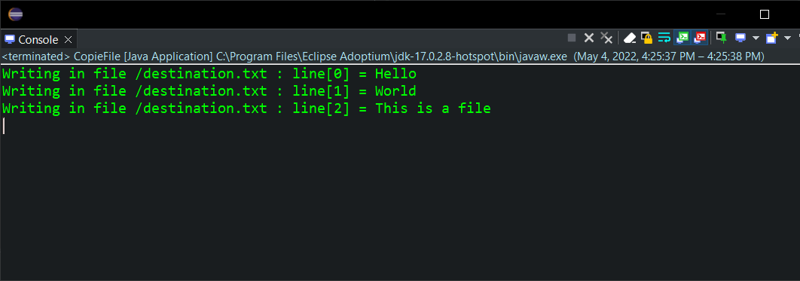
Exo 3 :
Creons la class du multiplication qui a pour deux methodes MultToFile() and MultCheckFile() :
package Exo3; import java.io.DataInputStream; import java.io.DataOutputStream; import java.io.FileInputStream; import java.io.FileNotFoundException; import java.io.FileOutputStream; import java.io.IOException; public class MultiplicationInAFile { private float a; public float getA() { return a; } public void setA(float a) { this.a = a; } public MultiplicationInAFile(float a) { super(); this.setA(a);; } public void MultToFile(int NbrMult){ try { String s; FileOutputStream fr = new FileOutputStream("Fichier/exo3/MultToFile.txt"); DataOutputStream out = new DataOutputStream(fr); for (int i = 1; i <= NbrMult; i++) { out.writeFloat(this.a*(float)i); } } catch (FileNotFoundException e) { // TODO Auto-generated catch block e.printStackTrace(); } catch (IOException e) { // TODO Auto-generated catch block e.printStackTrace(); } } public void MultCheckFile(){ float var,i = 1; try { FileInputStream source = new FileInputStream("Fichier/exo3/MultToFile.txt"); DataInputStream input = new DataInputStream(source); while((var = input.readFloat()) != 0) { System.out.println((float)(var/i) +" x "+i+" = "+var); i++; } } catch (FileNotFoundException e) { e.printStackTrace(); } catch (IOException w) {} } public static void main(String[] args) { MultiplicationInAFile m = new MultiplicationInAFile(24); m.MultToFile(8); m.MultCheckFile(); } }
Input / Ouput :
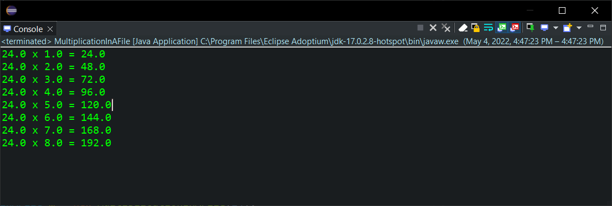
Exo 4 :
package exo4; import java.io.FileInputStream; import java.io.FileNotFoundException; import java.io.FileOutputStream; import java.io.IOException; public class exo4 { public static void main(String[] args) { int oct; try { FileInputStream input = new FileInputStream("Fichier/exo4/source/source.txt"); FileOutputStream out = new FileOutputStream("Fichier/exo4/destination/destination.txt"); while((oct = input.read()) != -1) { out.write(oct); } } catch (FileNotFoundException e) { // TODO Auto-generated catch block e.printStackTrace(); } catch(IOException I) { I.printStackTrace(); } } }
Input / Ouput :
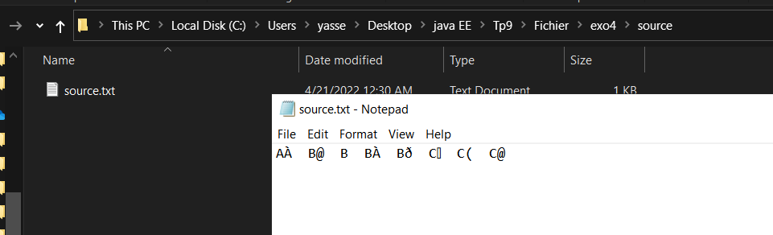
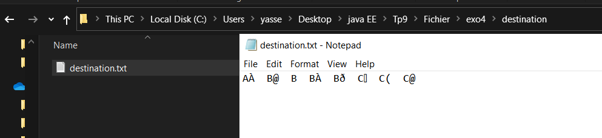
Exo 5:
- Creons une class Client:
package exo5; import java.io.Serializable; public class Client implements Serializable { String Nom,Prenom,Adress; public Client(String nom, String prenom, String adress) { super(); Nom = nom; Prenom = prenom; Adress = adress; } }
- Ecrivons un code java qui sauvgarde 3 client dans un fichier binaire "file.dot" :
public static void Sauvgarder() { try { Client C1 = new Client("Nabouzi", "yasser","Casablanca,Ainsbaa"); Client C2 = new Client("Lachkar", "Badr","Khouribga,Village"); Client C3 = new Client("Amred", "Mohamed","Fes,Hay chourfa"); FileOutputStream out = new FileOutputStream("Fichier/exo5/file.dot"); ObjectOutputStream outobj = new ObjectOutputStream(out); outobj.writeObject(C1); outobj.writeObject(C2); outobj.writeObject(C3); outobj.close(); System.out.println("File created !!"); } catch (FileNotFoundException e) { // TODO Auto-generated catch block e.printStackTrace(); } catch (IOException w) { w.printStackTrace(); } }
- Creons un code java qui recharge les noms et les mettres dans un tableau.
public static void ReadFile(String FileInput) { Client p =null; String[] S = new String[3]; int i = 0; try { FileInputStream input = new FileInputStream(FileInput); ObjectInputStream inputo = new ObjectInputStream(input); while((p = (Client)inputo.readObject()) != null){ System.out.println("============\n"+"Prenom : "+p.Prenom+"\nNom : "+p.Nom+"\nAdresse :"+p.Adress); S[i] = p.Nom; i++; } input.close(); inputo.close(); } catch (FileNotFoundException e) { // TODO Auto-generated catch block // e.printStackTrace(); } catch (IOException w) { // w.printStackTrace(); } catch(ClassNotFoundException c) { // c.printStackTrace(); } System.out.println("================"); // Tableau des nom des chaine de character for (String Name : S) { System.out.println(Name); } }
Input / Ouput :
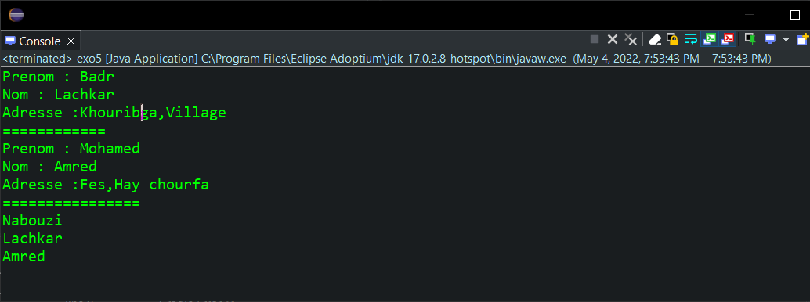
-
En utilisant deux Thread, lisons les donnes des deux fichiers sumultanement et affichons leurs nom et prenoms.
- fichier 1:
- fichier 2:
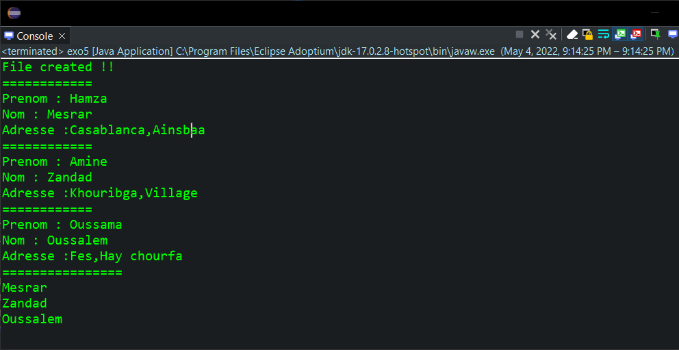
- fichier 1:
public static class ThreadReadFile extends Thread{ String Fichier; public ThreadReadFile(String fichier) { super(); Fichier = fichier; } public void run() { ReadFile("Fichier/exo5/"+Fichier); } }
Main
public static void main(String[] args) { //Sauvgarder(); ThreadReadFile T1 = new ThreadReadFile("file.dot"); ThreadReadFile T2 = new ThreadReadFile("file1.dot"); T1.start(); T2.start(); //ReadFile("Fichier/exo5/file.dot"); }
Input / Ouput :
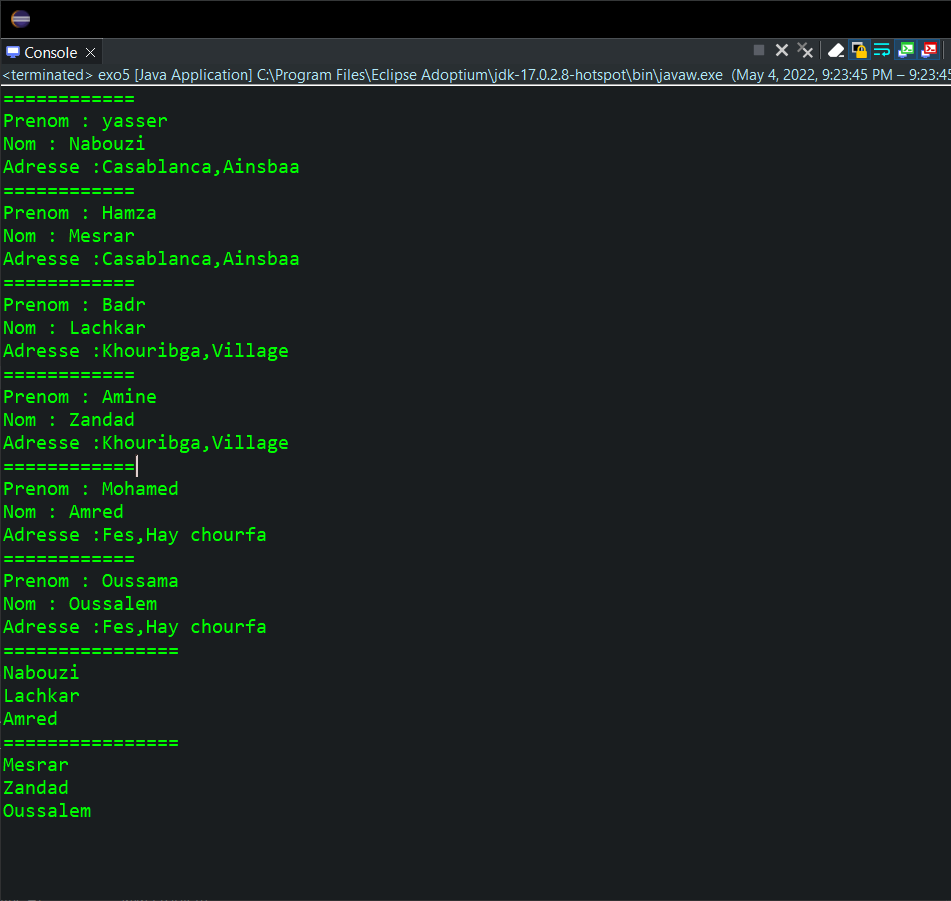